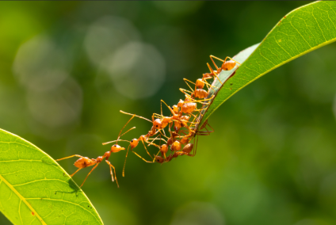
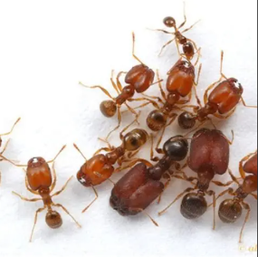

Castes & Roles
In ant societies, each individual has a specific role to fulfill, forming a structured caste system that ensures the colony's survival and success.

| Caste | Image | Role | Description |
|---|---|---|---|
| Queen |  |
Reproduction | Lays all the eggs, founding and expanding the colony. |
| Workers |  | Foraging & Maintenance | Gather food, care for young, and maintain the nest. |
| Soldiers |  | Defense | Protect the colony from threats and intruders. |
| Scouts |  |
Exploration | Locate food sources and assess new environments. |